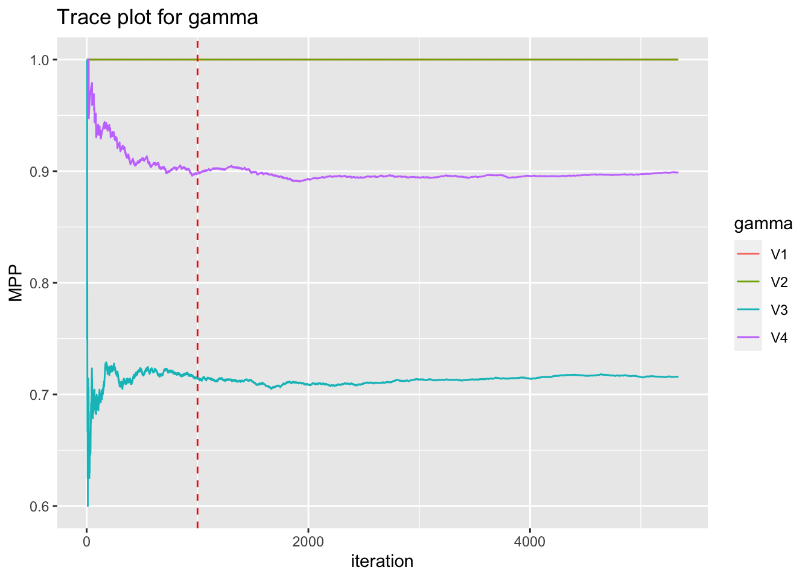
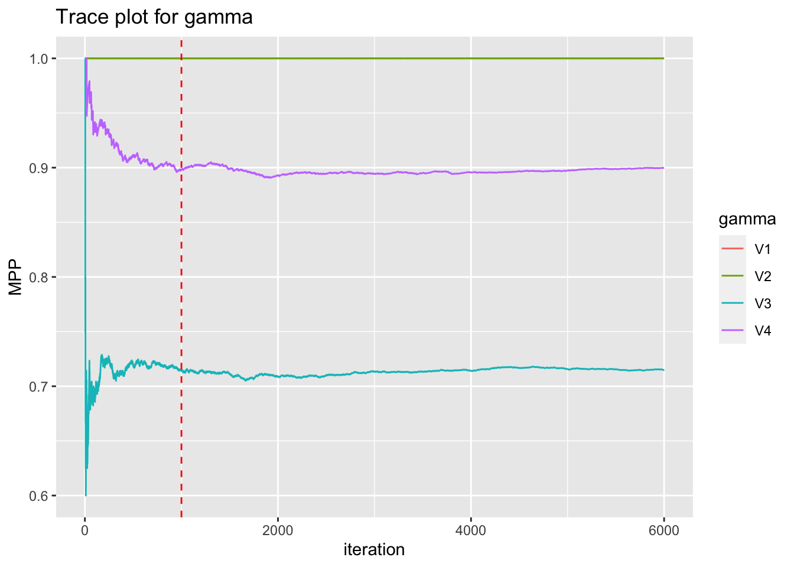

gamma_chain <- readRDS("data/2023-09-08_gamma_chain_seed_1.rds")
eta_chain <- readRDS("data/2023-09-08_eta_chain_seed_1.rds")Step B1. Sampling Component and Variable Activation Report
About the simulated data
We simulate 10 iid normal random variables for 2 views. The first five features are active in the first two components. All else are inactive.
Results
I was running the MCMC locally and needed to terminate the run early to get to a meeting. Here we see how many iterations are available.
n_iterations <- gamma_chain[1, ] %>% is.na() %>% which() %>% min()
n_iterations <- n_iterations - 1
print(n_iterations)[1] 5338Below is the trace plot for \(\gamma\)’s MPPs.
n_burnin <- 1000
r <- 4
gamma_names <- paste("gamma", 1:r, sep = "_")
gamma_df <- gamma_chain[, 1:n_iterations] %>%
apply(MARGIN = 1, FUN = cummean) %>%
as.data.frame() %>% mutate(iteration = 1:n_iterations) %>%
gather(key = "gamma", value = "MPP", -iteration) %>%
mutate(gamma = gamma %>% as.factor())
gamma_plot <- ggplot(gamma_df,
aes(x = iteration, y = MPP, color = gamma)) +
geom_line() + geom_vline(xintercept = n_burnin,
linetype = "dashed", color = "red") +
labs(x = "iteration", y = "MPP",
title = "Trace plot for gamma")
print(gamma_plot)
Here we start to look at the posterior for \(\eta\).
Note, \(\eta_{lj}=1\) denotes that in the lth component, the jth feature is active.
Since the MCMC selected the first component and second components as active, we start by looking at the results for the first component \(\eta_{1j}\) for \(j=1, 2, 6, 7\) since, truly, \(j=1:5\) active and \(j=6:10\) inactive.
features_of_interest <- c(1, 2, 6, 7)
feature_names <- paste("j", features_of_interest, sep = "_")
# TODO make trace plot function to reduce copy paste going forward
eta_df <- eta_chain[1, features_of_interest, 1:n_iterations] %>%
apply(MARGIN = 1, FUN = cummean) %>%
as.data.frame() %>% rename_at(vars(names(.)), ~ feature_names) %>% mutate(iteration = 1:n_iterations) %>%
gather(key = "eta", value = "MPP", -iteration) %>%
mutate(eta = eta %>% as.factor())
eta_1_plot <- ggplot(eta_df,
aes(x = iteration, y = MPP, color = eta)) +
geom_line() + geom_vline(xintercept = n_burnin,
linetype = "dashed", color = "red") +
labs(x = "iteration", y = "MPP",
title = "Trace plot for eta_1.")
print(eta_1_plot)
Now we calculate the component selection mean after burnin.
n_samples <- n_iterations - n_burnin
component_sel_mean <- gamma_chain[, (n_burnin+1):n_iterations] %>%
apply(MARGIN = 1, FUN = mean)
print(component_sel_mean)[1] 1.0000000 1.0000000 0.7162287 0.8990318The feature selection mean after burnin:
feature_sel_mean <- eta_chain[,, (n_burnin+1):n_iterations] %>%
apply(MARGIN = c(1,2), FUN = mean)
print(feature_sel_mean) [,1] [,2] [,3] [,4] [,5] [,6]
[1,] 1.00000000 1.00000000 0.90917473 1.00000000 1.00000000 0.07261411
[2,] 0.79737206 1.00000000 1.00000000 1.00000000 0.98570770 0.07883817
[3,] 0.03872752 0.04518211 0.04633472 0.04863993 0.04702628 0.17196865
[4,] 0.05647764 0.06016598 0.05532503 0.39718764 0.05486399 0.32388197
[,7] [,8] [,9] [,10]
[1,] 0.11779622 0.06754265 0.08022130 0.09105579
[2,] 0.52650991 0.07100046 0.30428769 0.20147533
[3,] 0.04656524 0.04633472 0.08068234 0.04840941
[4,] 0.06869525 0.05763024 0.39326879 0.14107884The global feature selection mean after burnin:
# TODO is this the proper way to calculate VarSelMeanGlobal?
feature_sel_global_matrix <- eta_chain[,, (n_burnin+1):n_iterations] %>%
apply(c(2,3), FUN = sum)
feature_sel_global_matrix <- ifelse(feature_sel_global_matrix !=0, 1, 0)
feature_sel_mean_global <- rowMeans(feature_sel_global_matrix)
print(feature_sel_mean_global) [1] 1.0000000 1.0000000 1.0000000 1.0000000 1.0000000 0.5253573 0.6373905
[8] 0.2231443 0.6424620 0.4100968Discussion
The algorithm is selecting for the active components and active features while ignoring inactive ones :)